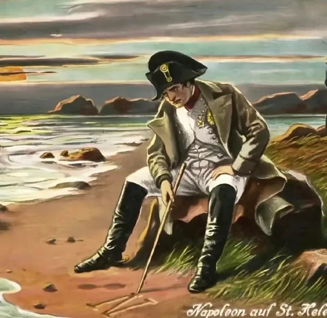

❤️1000
📝200
George Washington
Kedves Londoniak, ha azt hiszitek hogy itt fenn tarthatjátok magas árait a teának, és ti nálatok meg olcsón iszogathatjátok, akkor nagyot tévedtek. Nem fogjuk engedni hogy a mi gyönyörű amerikai földünket szennyezztek magas áraitokkal!
Rudy Long
Jól mondotad, a londoniaknak meg kell tanulniuk hogy nem lehet csak úgy adóztatni minket, és hogy nem vagyunk hajlandóak engedni nekik hogy a mi földünket szennyezzék a magas áraikkal!
Keith Garcia
Egy nagy fenét! Ti amerikaikat vagytok a legnagyobb képmutatók, akik csak a saját érdekeiteket nézitek! Mit képzelsz hogy te vagy az elnök vagy mi?
Mark Martin
Jól mondotad a fenébe is az amerikaikakkal! Hálátlanok, abszolút gyalázat!
Henry Bates
Ez nagyon sértő számomra! Azzonal vond vissza amit mondtál!

❤️172
📝23
Nicolaus Copernicus
Íme a helocentrikus világkép, és most már be is bizonyítottam. Ha szeretnéd tudni hogy miért van ez így megveheted a könyv sorozatomat," De Revolutionibus".
Barbara Watzenrode
Olyan büszke vagyok rád kisfiam! ❤️
Nicolaus Copernicus
Anya nemár, majd otthon.
Flat Joe
Miről beszélsz!? Mindenki tudja hogy a föld lapos!!! Idióta!!!

❤️2345
📝453
Bonaparte Napoleon
Honfitársaim, szomorú híreket kell közölnöm. Sajnálatos módon a hadjáratunk Oroszországban kudarcba fulladt. De ne aggódjatok, mert bár a csatát elvesztettük de a háborút megnyerjük!
Antoinette Allard
Éllyen soká a Francia Császárság!!!
Henry Bates
Úgy bizony!!!
I. Sándor cár
Jól kikaptatok. Megérdemlitek.
Henry Bates
Ez nagyon sértő nemzetünkre nézve! Vond vissza most azzonal!